Directorate
Director
Dr. Marbe Begnoug
Advanced mathematical methods, statistics and artificial intelligence to address environmental and public health challenges in Mauritania.
An interdisciplinary research unit at the heart of Mauritanian scientific challenges
The UMR-AMES (Analysis and Modelling for Environment and Health) is a mixed research unit established by Decree No. 001045, attached to the Institut Supérieur de Génie Industriel (ISGI) in Nouakchott, Mauritania.
Our mission is to apply advanced mathematical methods, statistical tools and artificial intelligence techniques to understand, model and contribute to solving environmental and public health problems affecting Mauritania and the West African region.
The unit brings together 33 researchers — 15 permanent and 18 associate members — from several Mauritanian higher education institutions and research organizations: ISGI, University of Nouakchott (FST, FSEG), ENS, IMROP, PNBA and ONISPA.
The first Joint Research Unit in Mauritania dedicated to the environment and health, UMR-AMES develops an integrated and interdisciplinary approach to these two major challenges facing the country. It brings together the most recognized scientific expertise in these fields and maintains close collaboration with Mauritania's leading institutional and academic partners.
Our work is organized around four interdisciplinary axes combining mathematics, statistics, computer science, environmental and health sciences.
Institut Supérieur de Génie Industriel (ISGI)
Nouakchott, Mauritania
Decree No. 001045 — Ministry of Higher Education
15 permanent members · 18 associate members
ISGI, P.O. Box 880, Nouakchott, Mauritania
Institutional organization and governance of the unit
Four interdisciplinary axes at the crossroads of mathematics, environment and health
Modelling pollutant transport in aquifers and surface waters, coastal ecosystem dynamics, and water resource management using lattice Boltzmann methods and finite elements.
Construction and analysis of compartmental models (SEIR, SEIJR) for infectious disease dynamics, public health decision support and evaluation of vaccination strategies.
Partial differential equations, functional analysis, Laplacian systems and advanced numerical methods. Development of theoretical tools for modelling complex physical phenomena.
Machine learning, deep learning and reinforcement learning. Classification of biomedical data, handwritten Arabic character recognition, and AI-driven environmental data analysis.
Four complementary teams structure the unit's scientific activities
Leader: Dr. Mohamed Saad Bouh Elemine Vall
Mathematical and numerical modelling of environmental phenomena: pollutant transport, ecosystem dynamics, groundwater flow. Numerical methods (FEM, FDM, LBM).
Leader: Dr. Zeinebou Zoubeir
Remote sensing, GIS and artificial intelligence for natural resource monitoring, environmental mapping and surveillance of coastal and marine zones.
Leader: Dr. Yahya Mohamed
Design and analysis of compartmental models for infectious and non-communicable disease dynamics. Quantitative evaluation of control strategies and decision-support tools.
Leader: Dr. Aziza Ahmedou
Spatial analysis of health data, epidemiological mapping and biostatistics. Application of data science and machine learning to public health surveillance.
33 researchers from several Mauritanian institutions
High-impact projects for environment and health in Mauritania
Applied mathematics · Artificial intelligence · Energy
This project develops advanced mathematical approaches and AI tools to model and optimize hydrogen storage in porous media — a strategic topic for the energy transition in Mauritania.
Mathematical epidemiology · Public health
This project focuses on the rigorous mathematical analysis of epidemiological models to better understand infectious disease dynamics in Mauritania and contribute to developing effective control and prevention strategies.
Publications by UMR-AMES members (2019–2025)
Events, seminars and latest news from UMR-AMES
UMR-AMES has secured funding for two research projects among the ten best projects selected by the National Agency for Scientific Research and Innovation — a national recognition of the unit's scientific excellence.
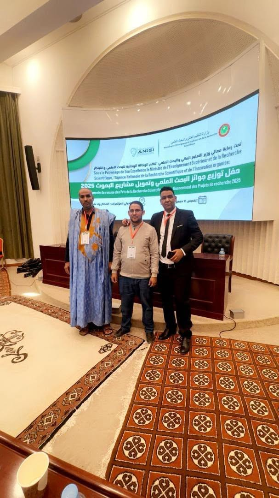
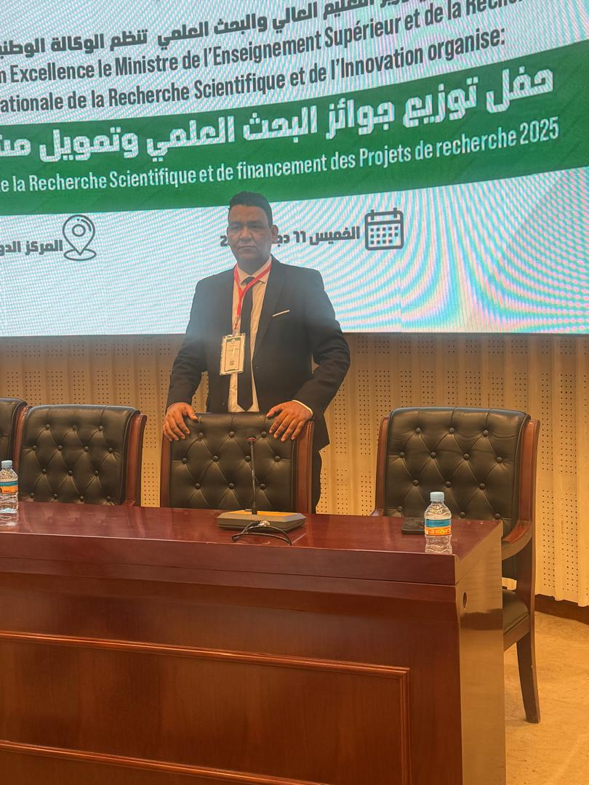
UMR-AMES hosts a CIMPA research school dedicated to mathematical modelling applied to environment and health, with lectures and workshops by international experts.
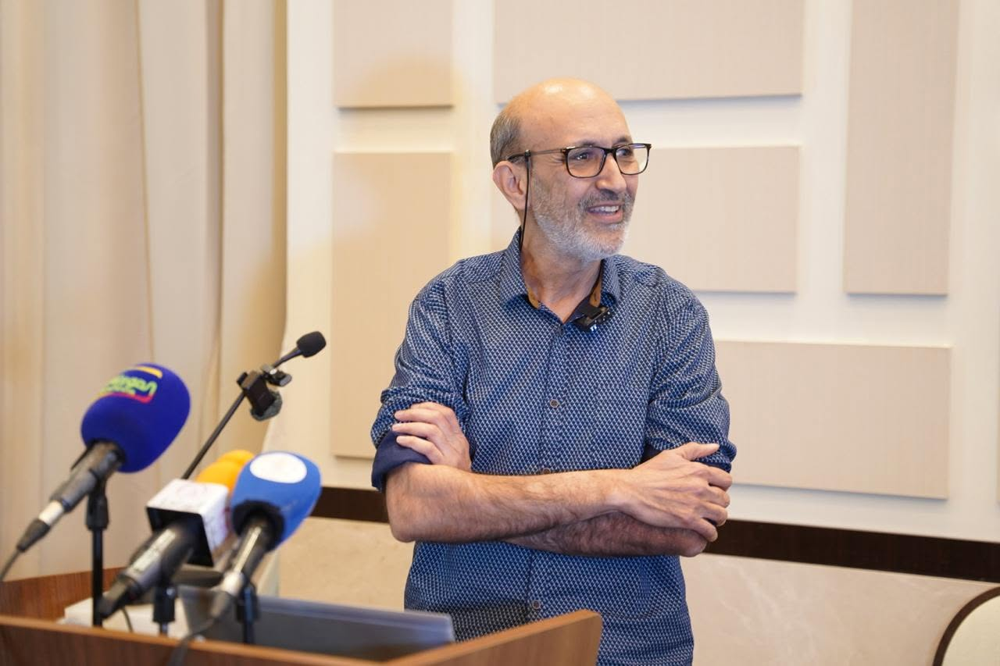
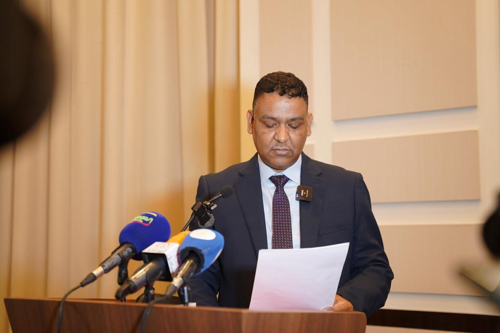
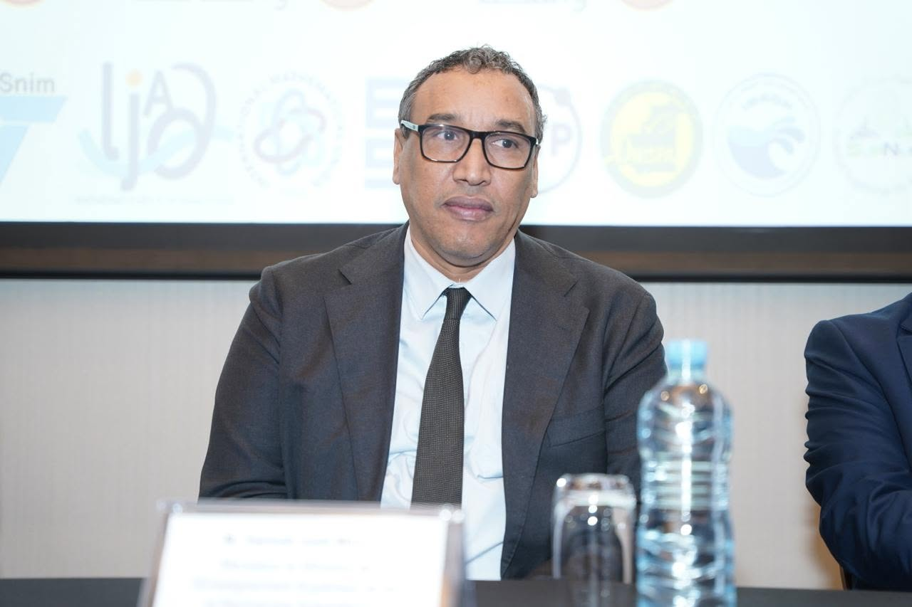
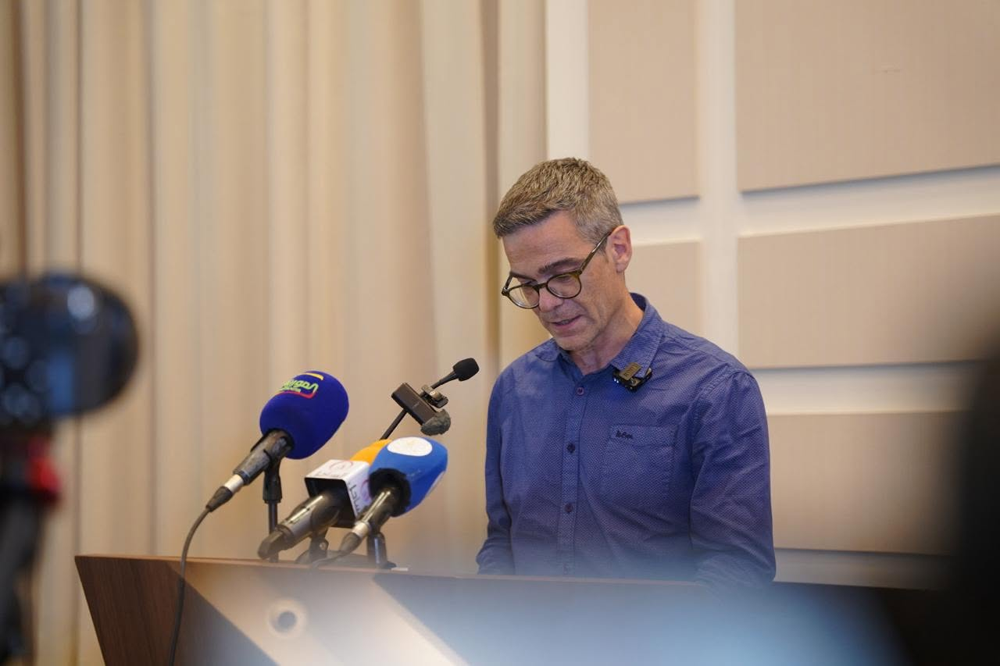
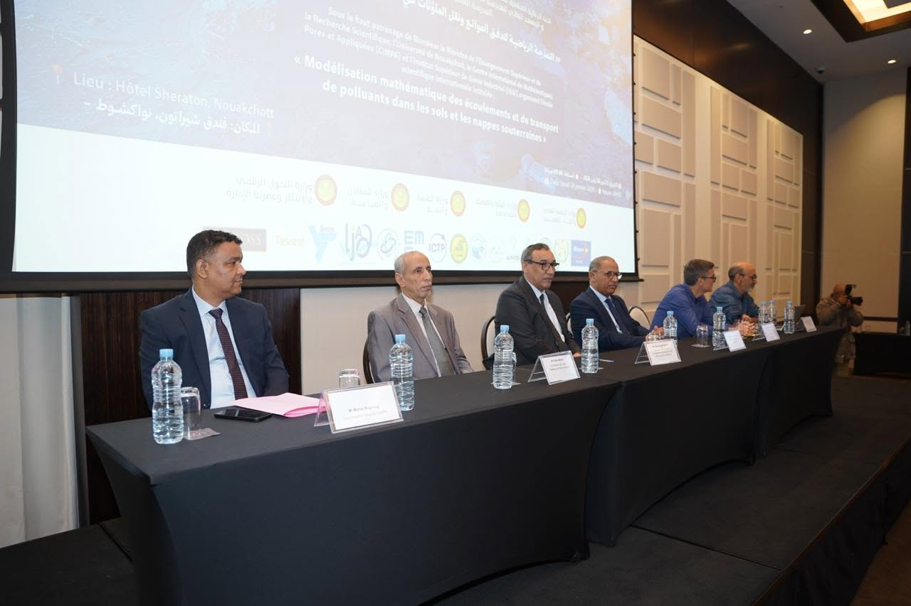
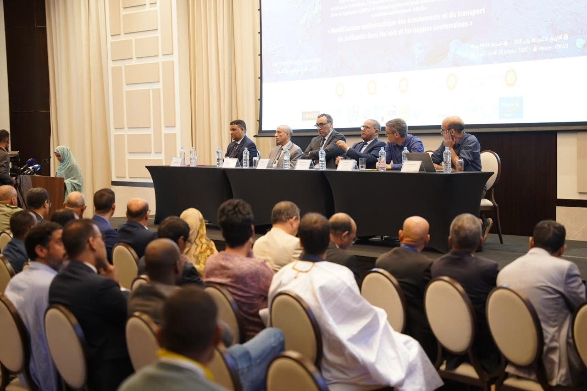
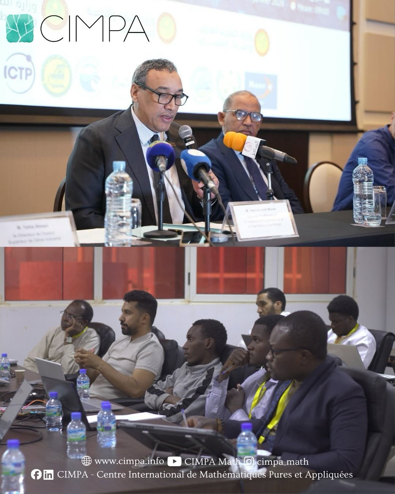
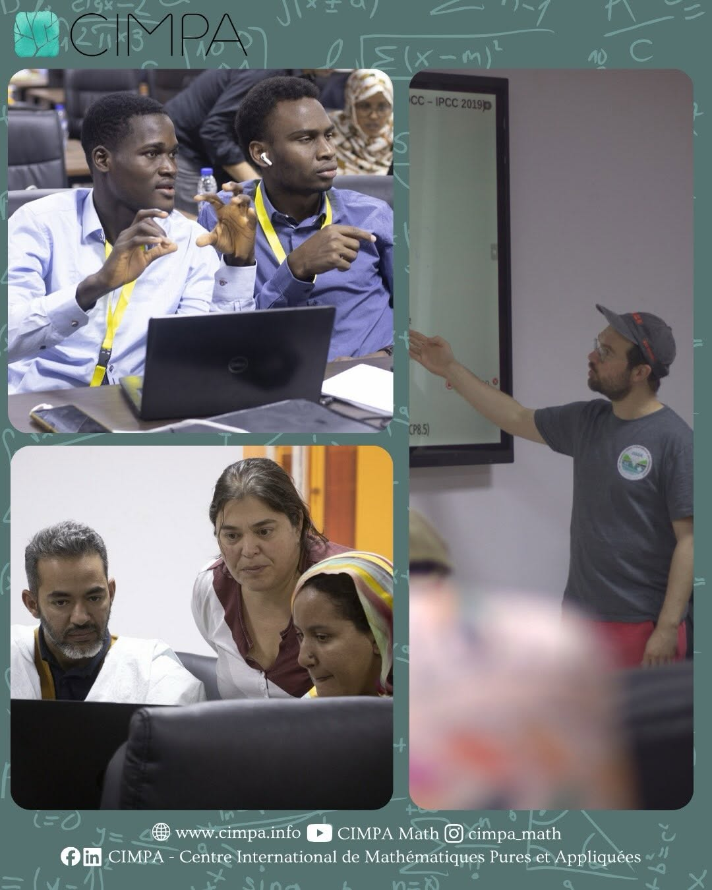
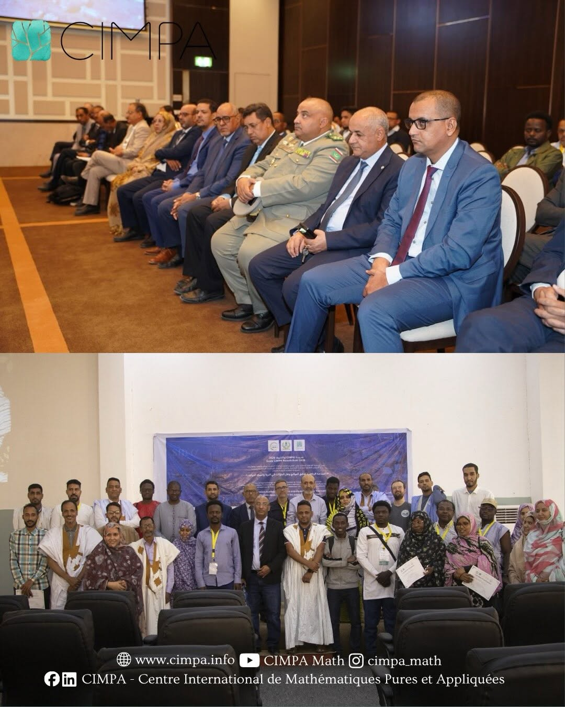
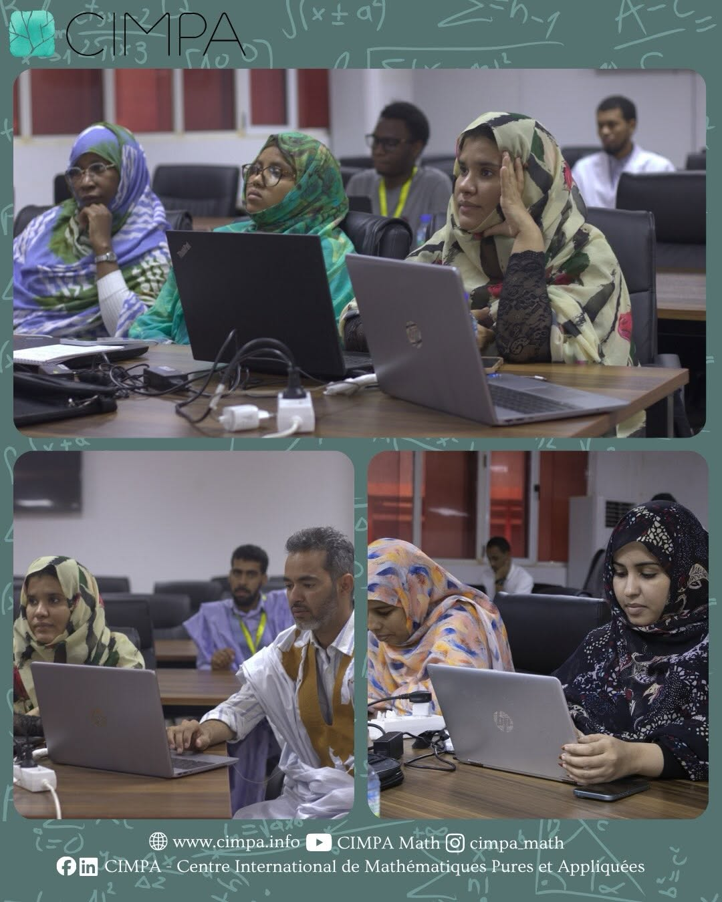
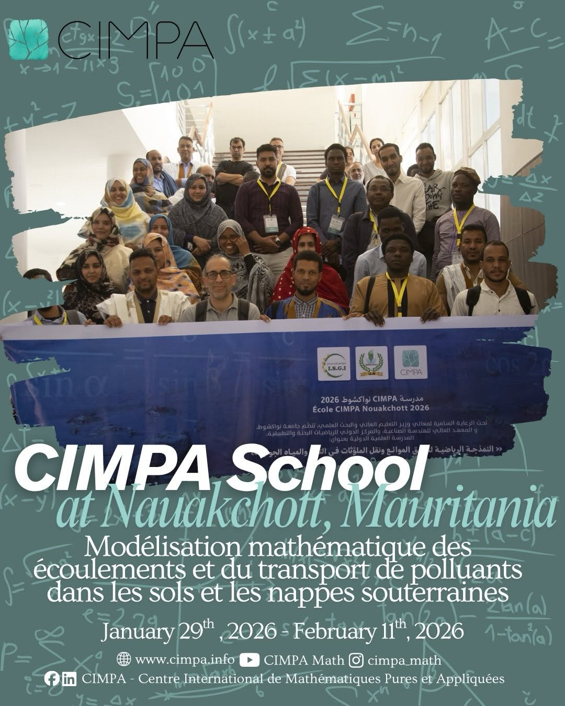
Scientific day on recent advances in mathematical modelling of epidemics, with presentations by PhD students and researchers of the unit.
UMR-AMES brings together expertise from several Mauritanian institutions
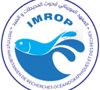
IMROPFor any question about our research, collaborations or to join the unit
Institut Supérieur de Génie Industriel (ISGI)
P.O. Box 880, Nouakchott, Mauritania
Sunday – Thursday
08:00 – 17:00 (Mauritanian time)